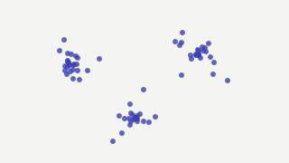
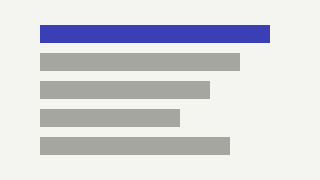
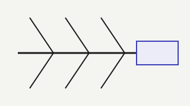
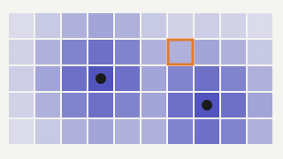
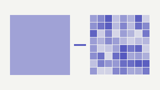

Research
I'm interested in using LLMs as measurement instruments: turning unstructured text about places into features that are reliable enough to enter causal and demand models, and checking whether they help.

Three LLMs score 15 place features for 261 NYC zones, with reliability measured before use (14 of 15 reach G ≥ 0.85). A difference-in-differences on the January 2025 congestion toll finds a 2.6 pp drop in ride-hail share.
Industry work

Built the models behind Omni’s market size, penetration and market-share views: app sessions from telco traffic, drivers separated from customers, transactions from browsing. Used by clients such as Gojek, Grab, Tokopedia and foodpanda; the product line grew from 5% to 70% of company revenue.

Online behaviour first, then location and mobility: Word2Vec embeddings turned into 30+ named personas (mom with kids, blue collar, white collar) for 80M+ subscribers, plus a look-alike model for audience targeting.

Top-up, call and online behaviour for people with no credit file. Gini 0.6, the best in the company's history.

Bronze, silver and gold pipelines in PySpark for a commerce platform with 30K+ merchants.
Consulting and location intelligence

Led the rebuild of a credit-scoring pipeline around automated feature preparation and model search; run time cut by 75%.

Is a weak block the land, the pesticide or the species? A diagnostic system built with domain experts; yield up 18%.

Learned what makes a store succeed from demographics, nearby places and mobility, then scored every map cell; the network grew from under 100 to 200+ outlets.

CNNs on satellite tiles estimate socio-economic status per grid cell, refined from 1 km to 100 m.
Elsewhere
| SKK Migas | An early ML model for oil and gas resources across 200+ working areas. |